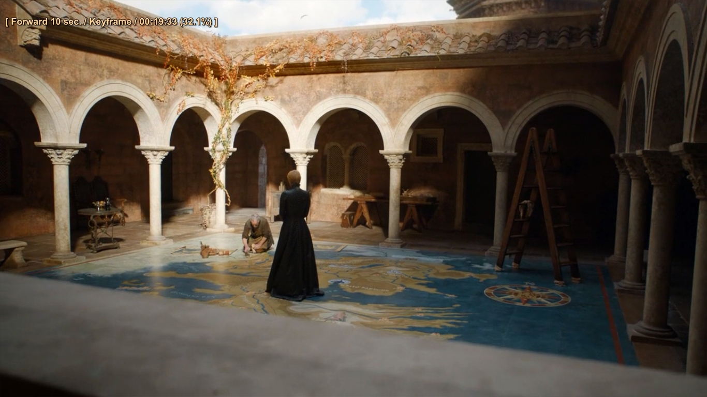

Season seven of Game of Thrones is fast approaching, like an invading armada flanked by huge CGI dragons. Will Daenerys Targaryen (Emilia Clarke) sweep all before her when she and her fire-breathing brood finally – finally ! – set foot / claw on Westeros? Has Cersei Lannister (Lena Headey) truly gone full Mad Queen? Is this the year Jon Snow (Kit Harington) at last cheers up?
But even as hardcore GoT fans look forward to the disentangling of these knotty threads, the rest of us may struggle the recall the state of play on the vast chessboard that is the Seven Kingdoms. There is much to keep track of. In the capital of King's Landing, Cersei has deftly outflanked her rivals by eviscerating them in a hellish inferno.
We open at King’s Landing, where the big parley is upon us. Grey Worm and his cast of thousands are standing outside the gates, spears aloft. “You wouldn’t find me fighting in an army if I had no cock,” Bronn says to Jaime, observing the field of mighty eunuchs. “What’s left to fight for?”
Gold? Jaime says, seeming to be guessing. Family? If these philosophical responses have you thinking, Hmm, you are right: they’re foreshadowing. “Maybe it really is all cocks in the end,” Jaime says, looking sad. (Cheer up, Jaime: you might have just come up with a new slogan for HBO.) The Dothrakis come swooping in on their horses and with their mini-scythes. They always have so much fun on a rampage.
Tyrion arrives on a boat with Varys, Davos Seaworth, Theon, Jon Snow, & Company, and he reminisces about King’s Landing’s high-quality brothels. Inside the castle, Cersei is saying, Look, everybody, if things get nuts, kill ’em in this order: silver-haired bitch; our brother; bastard who calls himself King. Jaime looks uncomfortable, as he has for a few years now. On the approach to the castle, many fond hellos: Pod and Tyrion; a Lannister soldier and a grunting crate; the Hound and Brienne of Tarth, who nearly killed him the last time they saw each other. (“Thought you were dead.” “You came pretty close.” Hey, Arya’s alive! Eh? And just like that, they’re friends. This season is like getting older: suddenly, everything happens head-spinningly fast.)
In Winterfell, Jon Snow and half sister Sansa Stark (Sophie Turner) continue their reconquest of the North. On the other side of the Wall, the Night King gathers his forces (actually that aspect of the story at least is straightforward: the Night King is lightly-frosted, unspeakably evil and wants to kill everyone).
With the first episode of the returning series just a few weeks away what better time for a year-by-year break-down of the saucy fantasy caper to rule them all. If you're really pushed for time, here's an even shorter version. A long time ago in a magical fantasy kingdom everybody was half-naked, over-sexed and blood thirsty. And then the ice zombies turned up…
The best Game of Thrones merchandise every fan should own